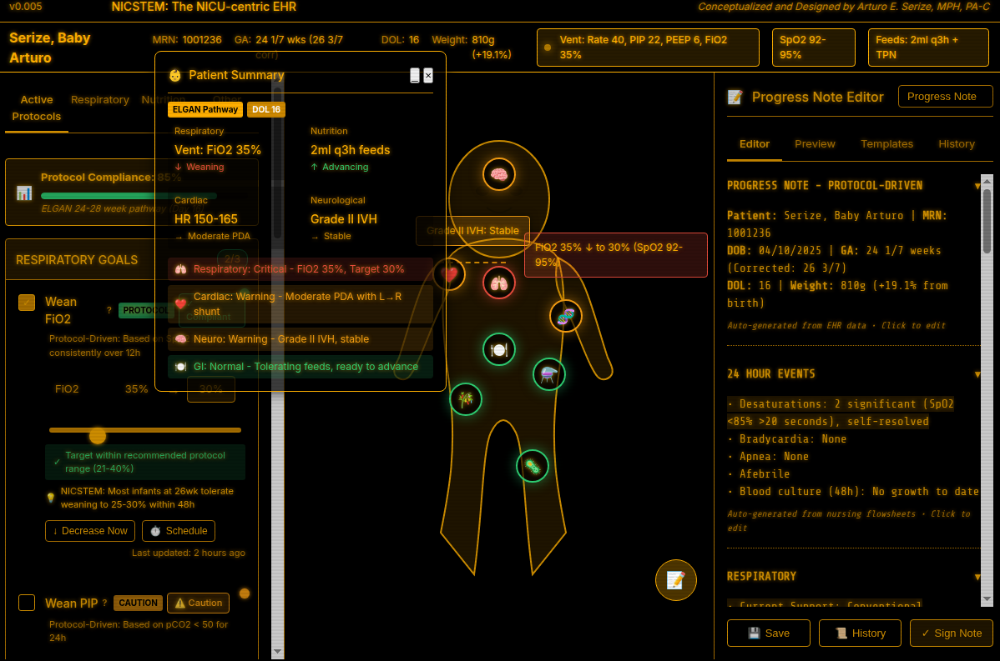
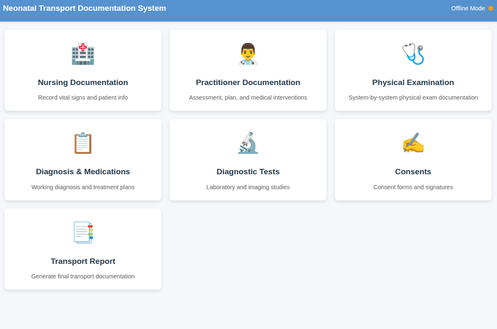
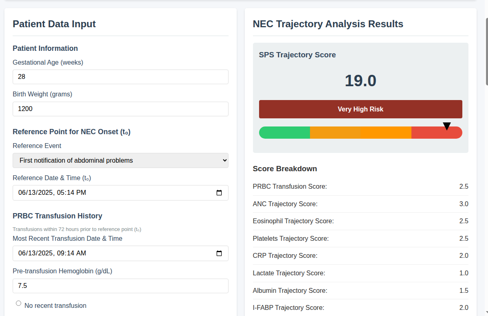

Clinical Systems Designer | Healthcare Innovation Specialist
With over a decade of clinical experience, I build systems that solve real problems clinicians face every day.
View My SolutionsAs a PA-C managing complex clinical trials and neonatal transports, I witnessed the same pattern repeatedly: critical data lost in paper workflows, clinicians drowning in documentation requirements, and EHR systems that hindered rather than helped patient care.
Instead of accepting "that's how we've always done it," I began designing and building solutions. What started as fixing a broken transport documentation process evolved into creating comprehensive clinical systems that address fundamental healthcare IT challenges.
My approach is unique: I don't just understand the technical requirements—I've lived the clinical workflows. Every system I design comes from firsthand experience with the problems it solves.

Revolutionary EHR interface designed around how neonatologists actually think. Instead of clicking through endless menus, clinicians interact with an anatomical baby diagram for system-by-system assessment. Real-time protocol compliance tracking ensures ELGAN guidelines are followed without disrupting workflow.
Key Innovation: Reduced documentation time from 45 minutes to 10 minutes per patient by matching interface to clinical thought patterns.
Technologies: Clinical workflow optimization, React, real-time data visualization
Live demo available upon request

Offline-capable documentation platform built for the reality of neonatal transport. Features automated vital signs reminders (because remembering q15 minute checks in a speeding ambulance is nearly impossible) and seamless handoff between nursing and practitioner modules. Digital consent capture ensures legal compliance even without connectivity.
Key Innovation: First transport documentation system designed by someone who's actually been in the back of a transport unit at 3 AM.
Technologies: Offline-first architecture, PWA, multi-role synchronization
Live demo available upon request

Predictive algorithm based on original clinical observation: progressive neutropenia precedes necrotizing enterocolitis by 24-48 hours. Tracks 9 biomarkers temporally to identify NEC before clinical symptoms appear. Dual-mode interface serves both clinical decision-making and resident education.
Key Innovation: Transforms pattern recognition from "art" to algorithm - potentially reducing NEC mortality by enabling earlier intervention.
Technologies: Temporal data analysis, predictive algorithms, Chart.js visualization
Publication forthcoming | Live demo available upon request